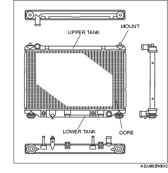

Radiator construction [ZY]
• A corrugated type radiator has been adopted.

• The radiator tanks are made of plastic and the core is made of aluminum for weight reduction.
• The water direction inside the radiator is in a down flow direction make bleeding air from the cooling system easier.
• Four rubber-insulated mounting brackets are utilized to decrease vibration.
• The radiator has an oil cooler on the under side. (ATX)
• A low-pressure type cap has been adopted for the radiator cap, and it is installed at the backside of the radiator upper hose to improve serviceability when pouring engine coolant and bleeding air.